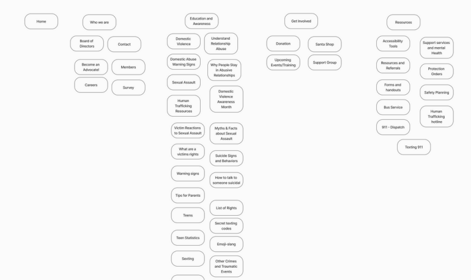
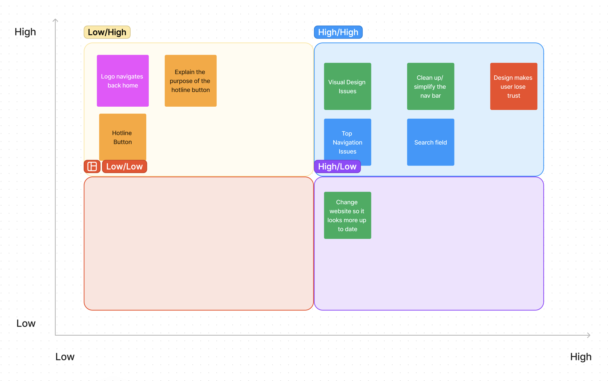
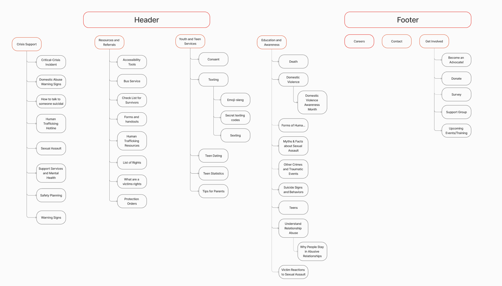
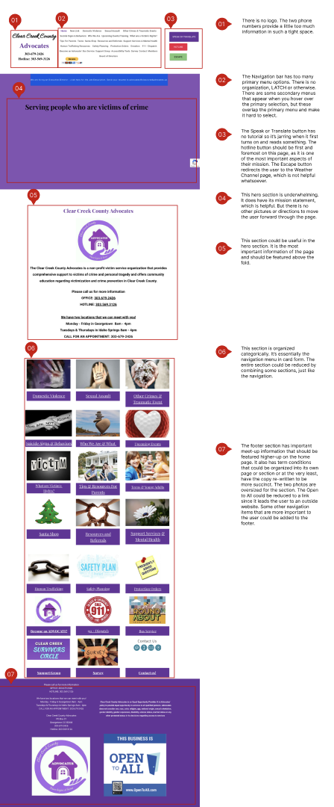
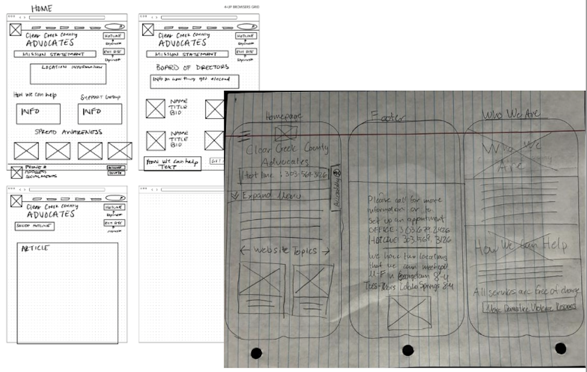
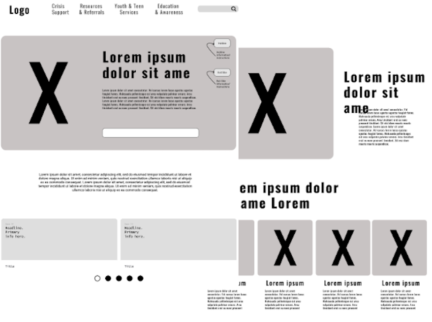
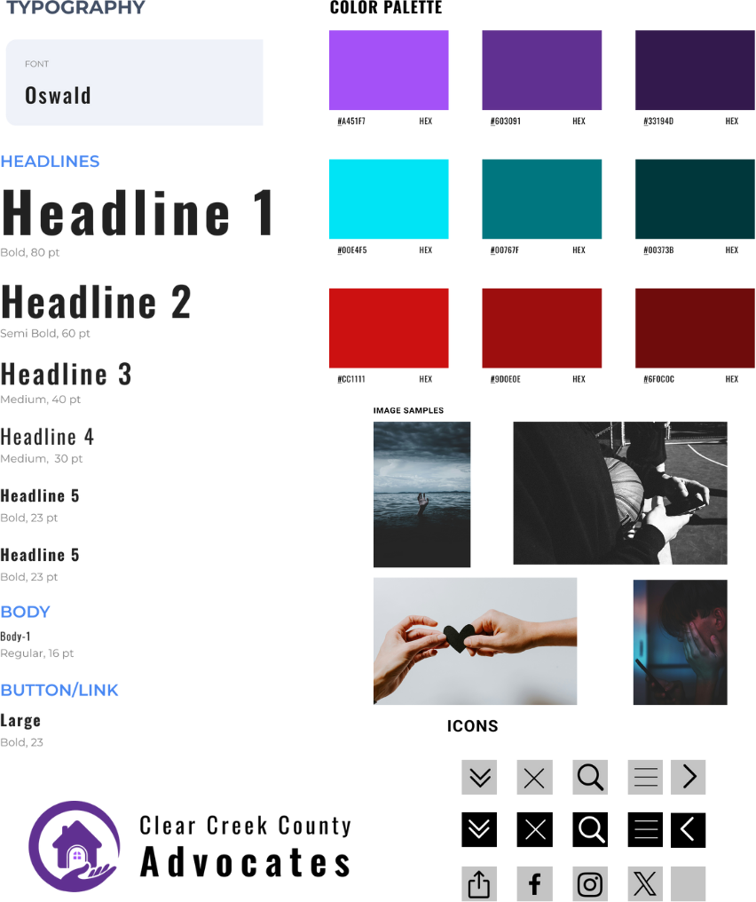
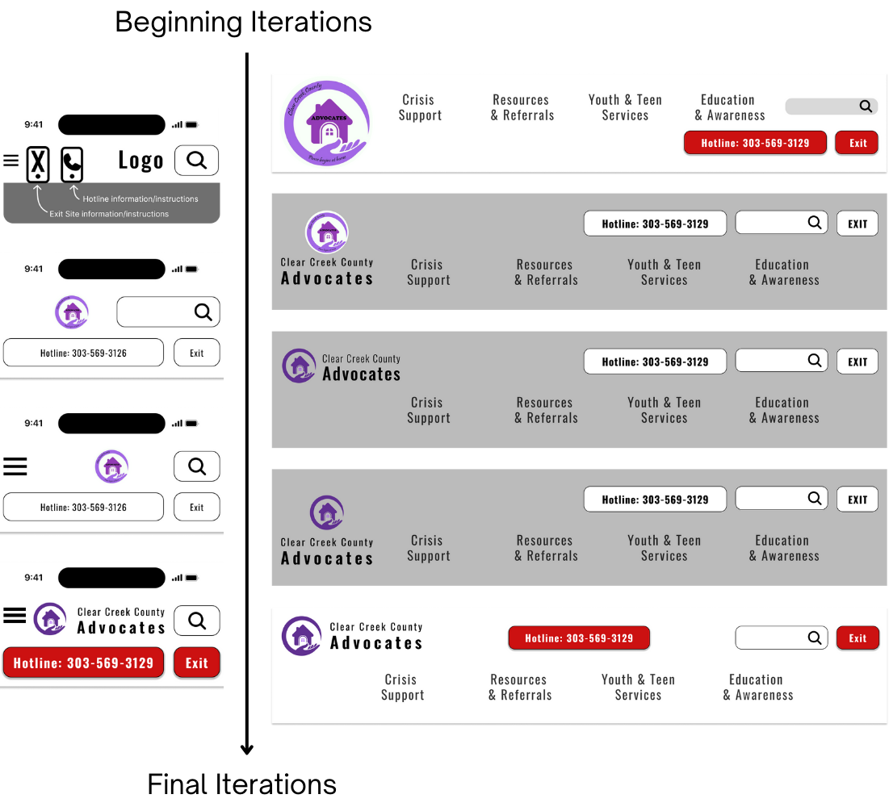

Clear Creek County Advocates was started in the 80's as a
victim advocacy resource. They focus on creating a safe space
for victims to be able to make their next move forward. Our
project focused on re-designing their website to make it more
functional and modern.
A primary challenge for users was easily finding the pages
within the navigation bar. Once they did find the right page,
each one was slightly underdeveloped.
The biggest issue found was the lack of orgnization when it comes to
the navigation. The amount of pages and the lack of information on
each of them made it hard for the user to find what they were looking
for. It also made the user loose trust in the orginazation. Using
personas, we were able to find the most likely path through the
website and focus on redesigning those pages. The stakeholder
interview cleared up the purpose of some of the buttons.




Phase 2: Definition and Synthesis
The card sort was the most important. It allowed us to see how the user would logically organize
all the pages in a way that would make it easily flow for them. Once we had that and some user interviews,
we were able to make the next steps of putting it together
Phase 3: Ideation

Each box from the user flow was made into a
separate screen, except for the Search and
Suggestion boxes because they would accomplish
the goal of finding a location better if they were
paired.

Phase 4: Prototyping
To start prototyping, rough sketches were created for the
"Homepage," "Who are We," and "Suicide Signs & Behaviors"
pages. The focus was on designing the header and footer,
which were then turned into digital wireframes. These
wireframes were refined to meet user requirements for a
refreshed look, spaciousness, and ease of use, resulting in the
first Clear Creek County Advocates LoFi prototype with added
interactions.


Phase 5: User Testing
Users expressed dislikes for sizing and desired better page
structure. The project stakeholder approved and was pleased
with the prototypes direction. Experimentation was done with
hotline and exit site buttons to optimize functionality without
being visually intrusive to users. Key improvements made:
Less spacing through the desktop, so users knew there was
more to the page than just one section
More changes to the desktop header
Made featured topics reel pagination clickable
Small Figma interactions were fixed
Phase 6: Future Opportunites
The design needs more responsive interactions and user testing. Adding graphic elements can enhance visual appeal and
reduce whitespace. The new navigation bar has significantly improved organization and clarity. Giving trust back to the users!
The future direcetion of the project could be more simplifying of the website's pages and combining content can enhance user
navigation and access to information.

.png)